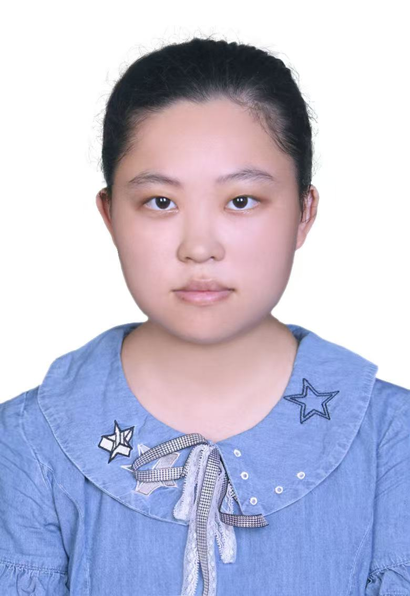

光纤织网 智守城脉
针对全国超 290 万公里 地下管线和百万座城市桥梁的老化风险，以分布式光纤传感技术为底座，打造全域感知与智能预警的整体解决方案。
核心技术指标
📡
硬件全域感知
- ✓ 单套设备最大探测距离达 25 公里。
- ✓ 事件定位精度 ≤5 米，报警响应时间 ≤5 秒。
- ✓ 灵敏度提升 30% 以上，识别准确率 ≥93%。
☁️
光脉智联 SaaS 平台
- ✓ 内置 AI 声纹识别算法，自动识别泄漏与微形变。
- ✓ 集成 GIS 系统，支持三维可视化数字孪生。
- ✓ 底层采用国密 SM4 加密，零信任架构防护。
真实落地案例
珠海澳门拱北输水工程
全长超 15 公里
成功识别沿线第三方施工隐患 23 起，精准预警微小泄漏隐患 2 起，保障对澳供水生命线。
查看详情
济南东湖调水工程
8.1 公里输水隧洞
成功捕捉隧洞衬砌 3 处 微小形变隐患，系统数据与人工排查比对准确率达 96% 以上。
查看详情
某县域燃气管网监测
320 公里燃气管网
成功识别违规开挖等振动隐患 17 起，通过算法迭代，将城市嘈杂环境误报率降至 3% 以下。
查看详情
三级盈利生态
基础硬件建设
一次性投入，低门槛接入
- 设备标价 35万/台
- 管网综合 5-8万/公里
核心营收模型
SaaS 订阅服务
按年付费，持续升级
- 基础版 3万元/年/百公里
- 专业版 8万元/年/百公里
- 旗舰版 20万元/年/项目
数据安全与增值
针对政企客户定制化
- 私有化部署 30-100万元
- 年度安全运维 10%-15%
核心研发团队
光脉智联团队由光电感知、大数据安全、商业化运营及智能制造领域的专家组成

陈钇夫
项目负责人 · 算法与数据工程

刘骏腾
光电系统负责人 · DAS 核心技术
张靖晗
AI 算法负责人 · 全栈开发

王秭越
光电系统工程师 · 传感器设计
黄晨曦
商业运营 · 财务分析
孔闻婷
项目路演 · 文案策划
王曦
前端架构 · 光纤传感系统

邢嫣然
视觉设计 · PPT 与排版
包诗月
嵌入式开发 · 建模分析
王豆豆
嵌入式开发 · 算法工程